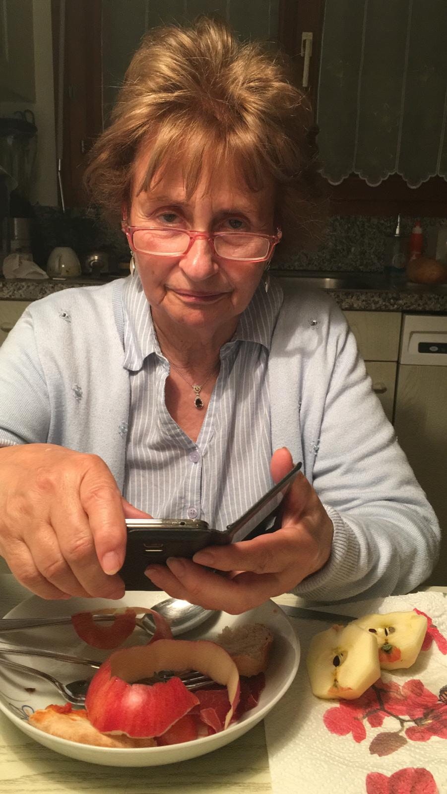

Recensioni
valutazione complessiva



"non mi piace"

La birreria artigianale Mortinger nasce a wartau nel 2020(?), sede ancora attuale.
La birreria è diventata famosa negli anni per la sua strettissima accessibilità, che permette solo ad un gruppo di selezionati utenti di poterne usufruirne.
Altra rinomata caratteristica è lo stile artigianale nella produzione delle birre, che le conferisce un sapore unicoe autentico!
La produzione è limitata a pochi ma pregiati tipi di birra, disponibili solo in limitati periodi dell'anno.
È possibile ordinare le birre anche contattanto direttamente i produttori
Ginger: ...
Monto: ...
solo birre artigianali
valutazione complessiva
#solo birre artigianali